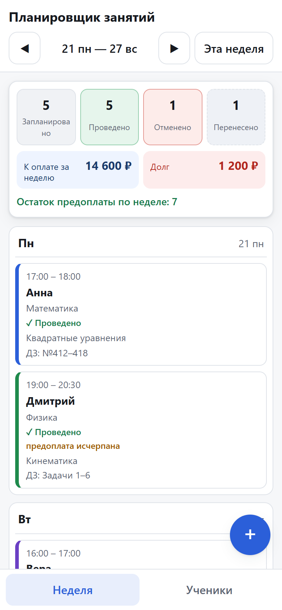

Планировщик занятий репетитора
Расписание занятий, переносы и учёт оплат в браузере. Без сервера, без аккаунтов, работает офлайн.
Репетитор вёл расписание в заметках
Проблема была не в нехватке функций, а в том, что переносы и договорённости жили в разных местах: чат, заметки, память.
Было
Список занятий на месяц в заметках, перенос «на словах», предоплата ученика — в голове. Ответ на вопрос «кто и сколько должен» приходилось считать вручную.
Стало
Одна неделя на экране, перенос в два касания, остаток предоплаты и сумма к оплате пересчитываются сами.
Что вошло в MVP
- Справочник учеников: имя, предмет, контакт, ставка
- Занятия разовые и сериями, горизонт серии — четыре недели
- Недельный вид Пн–Вс с переключением недель
- Перенос, отмена, отметка «Проведено», заметка и домашнее задание
- Пакетная предоплата с историей оплат
- Итог недели: число занятий, сумма к оплате и долг
Что сознательно не вошло
Нет входа учеников
Ученик — запись в справочнике, а не пользователь. Нет аккаунтов, ролей и авторизации.
Нет сервера
Данные лежат в localStorage браузера и никуда не
отправляются. Нет аналитики и внешних интеграций.
Нет напоминаний
В брифе напоминания были в результате, но не в составе MVP. Решение: оставить на потом, чем писать пуш-уведомления в нестабильном PWA без сервера.
Нет ИИ
ИИ-подсказка домашнего задания помечена «по желанию» и требует ключа API в открытом хранилище. Модуль оставлен выключенным.
Неделя — главный экран

- Семь дней, один экран, без прокрутки по месяцам
- Итог недели: сколько запланировано, проведено, отменено, перенесено
- Сумма к оплате считается по ставке ученика
- Статус виден и цветом, и подписью, и паттерном
- Пустая неделя объясняет, что делать, и даёт кнопку
Перенос не стирает историю
Самая частая жалоба: «я перенёс и забыл, а ученик пришёл в старый день». Поэтому перенос — это два занятия, а не редактирование даты.
Исходное
Остаётся в своей ячейке недели со статусом «Перенесено» и приглушённым видом.
Новое
Создаётся в целевой дате как обычное запланированное занятие.
Связь
Оба занятия знают друг друга: в карточке видна история переноса в обе стороны.
Суммы считаются, а не хранятся
Баланс, сумма к оплате и долг — вычисляемые значения. В хранилище нет денежных полей, которые можно забыть обновить.
| Показатель | Формула | Пример |
|---|---|---|
| Остаток предоплаты | оплачено занятий − проведено | 4 − 1 = 3 |
| К оплате за неделю | ставка по занятиям в статусе «запланировано» и «проведено» | 3 × 1 200 ₽ = 3 600 ₽ |
| Долг | остаток × ставка, если остаток отрицательный | −2 × 1 200 ₽ = 2 400 ₽ |
Слои не пересекаются
| Слой | Что делает | Чего не знает |
|---|---|---|
| domain/ | даты, недели, серии, баланс, деньги, команды | про DOM и хранилище |
| storage/ | версионированная схема, валидация, починка | про интерфейс |
| app/ | связывает команды, хранилище и уведомления | про разметку |
| ui/ | неделя, ученики, формы, карточки | про правила предметной области |
Правила закреплены тестами
- Нельзя создать занятие без ученика, даты и времени
- Два занятия с пересечением не создаются; касание границ — можно
- Повторная генерация серии не даёт дублей
- Перенос в прошлое запрещён, отменённое нельзя сделать проведённым
- Отметка «Проведено» списывает ровно одно занятие и один раз
- Перенос и отмена не меняют баланс
- Повреждённые данные не удаляются молча, а уходят в резервный слот
Работающий MVP, а не прототип
Уже работает
Опубликован на GitHub Pages, ставится на телефон как приложение, открывается офлайн, вёрстка не ломается на ширине 320 px.
Логичный следующий шаг
Напоминания о ближайшем занятии. Без них репетитор всё ещё открывает приложение по памяти.